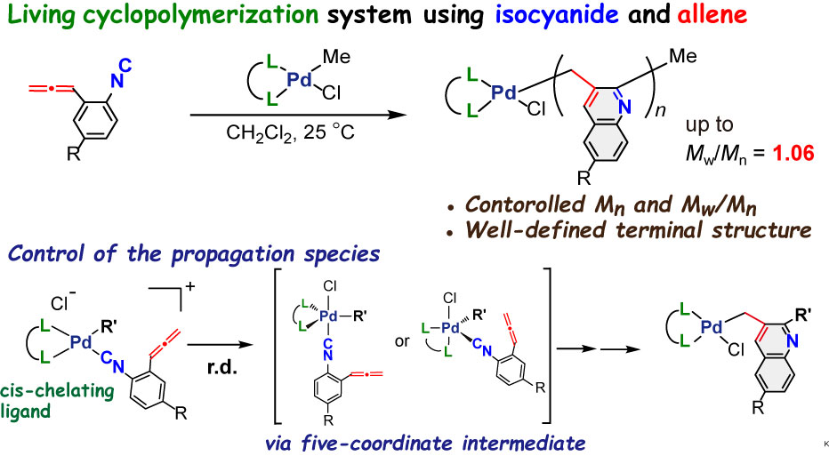

我々は以前に、オルト位にアレニル基を有するアリールイソシアニドをモノマーとした環化共重合反応により、主鎖にキノリレン-2,3-メチレン骨格を有する新しい高分子の合成に成功している。一方で、成長末端パラジウム錯体の反応性が非常に高く、成長反応を制御できないことが問題であった。そこで、パラジウム錯体の配位子を種々検討したところ。適切な二座配位子を用いた場合、分子量分布の狭い目的とする高分子が得られることを見出した。更にこの反応系では、開始剤であるパラジウム錯体とモノマーの仕込み比によって分子量を直線的に制御することができた。また、重合後の成長末端にキノリルメチルパラジウム錯体の存在が確認でき、重合後に再度モノマーを添加した場合も、狭い分子量分布を維持したまま分子量が増加した。以上の実験からこの反応がリビング重合性を有していることがわかった。反応解析の結果、本重合系では二座配位子の種類によって成長末端の反応性を制御することができ、リビング重合系の達成には配位子を適切に選択することが重要であることが明らかになった。